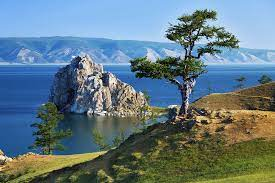

 Байкал - самое глубокое озеро в мире (1642 метра). Он занимает первое место в мире среди пресных озер по объему пресной воды (19% мировых запасов). Её больше, чем во всех вместе взятых пяти Великих озерах. Если вдруг на Земле пропадет вся вода, Байкал сможет обеспечивать водой человечество пять лет.